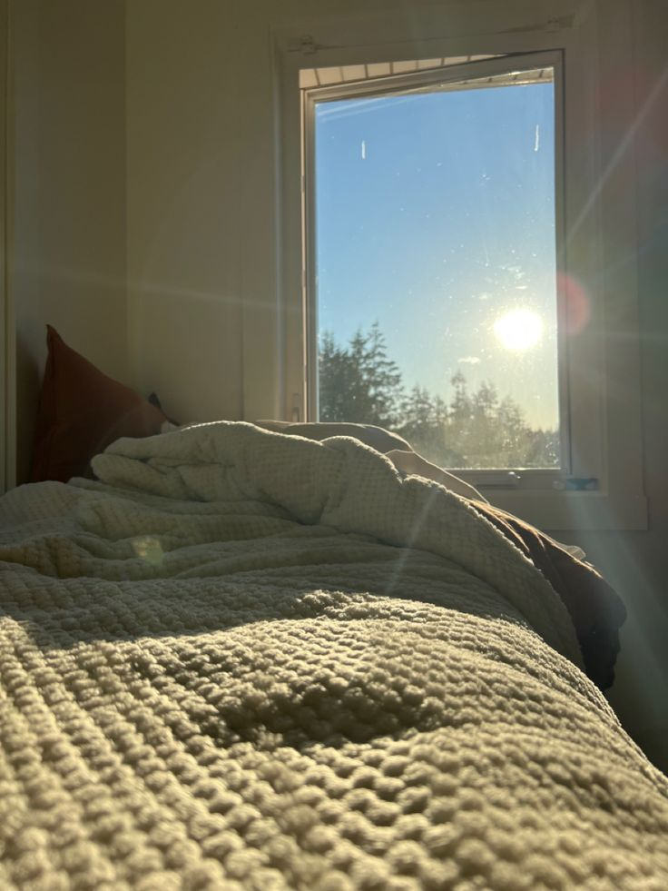
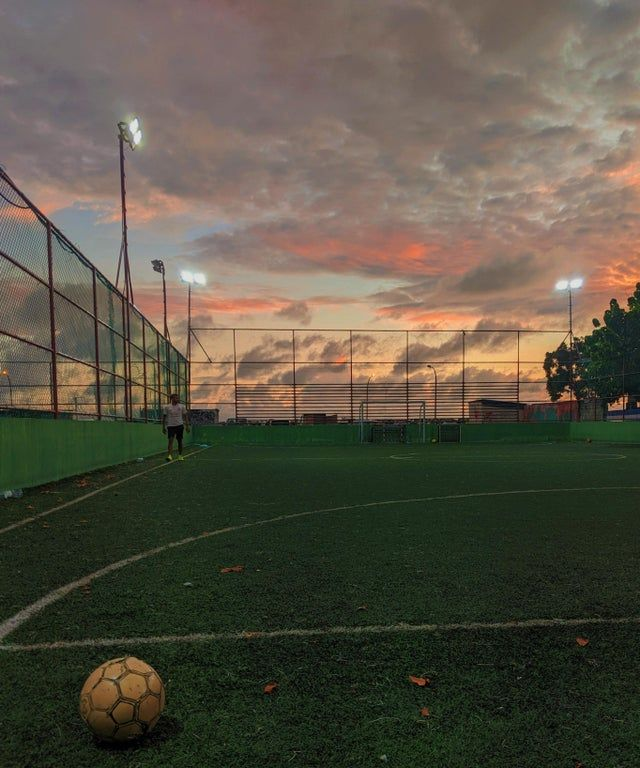

Routine is so important to me. As the day is made up of 24 hours, I share my Life into 3 equal parts of 8 hours. I guess we have already skipped the first 8 hours which is SLEEP! It is important to have at least 8 hours so I do not wake up looking like bugs bunny. The other two 8 hours are Learning and Life. I wake up every morning by 8, except from Tuesdays where I have to fufill my 8am class sentence for the rest of the semester, Tuesdays are so cruel. I wake up to music from my morning playlist, it gets me hyped for the day after all music is life. After I get out of bed, I make my bed, brush my teeth, and drink water.

Breakfast is interesting as I am always easting the same thing, it is either eggs and bacon or pancakes. I shower for a good 15 mins, then I face the greatest task of the day yet, figuring out a fit for work or school. Living off campus has its benefits, but I do not own a car yet so I have to use the bus every day to get to work or school. I guess that is the beauty of making a blog in the day of my life.
I am lucky to secure an internship for the summer at an Insurance company called Jackson National Life. Even better, I was lucky enough to get it as a part-time job for the fall and spring semesters. Jackson's IT internship consists of three rotations: Cloud engineering, Data Security, and Software delivery. I am doing the cloud engineering rotation for this semester, and it has been great so far. I work 18 hours a week, Mondays, Wednesdays and Fridays. After clocking in, I check my emails and calendars to see if a meeting has been scheduled for the day, and then I get to coding.
School has been fun this semester. I am a junior, and this is my first time schooling off campus, and it makes me see learning differently. Now, I see it more as a blessing and less as a given. Getting to school is a mini task, but once there, I have to lock in and understand what is being taught for the day. I usually head to the library to complete homework I can easily knock off to fulfill my 8 hours of learning on Thursdays. School is a very important thing in my life. Every day, Everyone should be learning.
Below is a tabular representation of how I manage work and school.
All work and no play makes Jack a dull boy. I always make sure I do extra things outside just working. I often either play the world's sport, Futbol, or I go to the gym. Futbol is a great part of my life and I have been playing it for as long as I can remember. I also tend to watch football or play football games, as these keep me active and make me very relaxed.

Besides playing that is not all to my life. I always make space for my friends and family. I usually have a little kickback with my close friends and talk about life and what has been going on in our lives. I am an international student and my parents live home, back in Nigeria. I make it a must to give at least 30 minutes in my day to talk to my mom or brother and just feel happy in their presence. After doing all these things I get ready for bed and that is the day in my life.